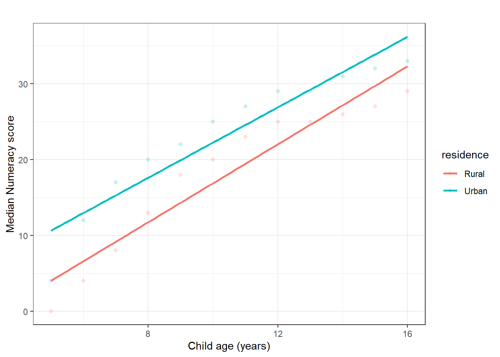

Chapter 9 Bivariate Analysis
Bivariate analysis examines the relationship between two variables. In PAL ICAN-ICAR survey work, it helps you describe differences across groups (for example, enrolment by residence) and patterns between numeric measures (for example, numeracy score by age). This chapter focuses on descriptive bivariate tools—cross-tabulations, group summaries, and scatterplots—while emphasising survey weights and clustering for population inference.
9.1 Choosing the right bivariate tool
Select a method based on the measurement type of each variable.
- Categorical × categorical: use a cross-tabulation and report row or column proportions.
- Continuous × categorical: compare group summaries (means, medians, and spread).
- Continuous × continuous: use a scatterplot and summarise the trend.
When you want population statements, use weighted estimators and design-correct standard errors.
9.2 Categorical × categorical: cross-tabulations
A cross-tabulation shows how the categories of one variable distribute across the categories of another. Use column proportions to compare rates across groups and row proportions to describe composition within a category.
The example below describes enrolment by sex.
##
## Female Male
## Enrolled 42594 41631
## Not enrolled 6028 6196##
## Female Male
## Enrolled 0.8760231993747685796947 0.8704497459593952823909
## Not enrolled 0.1239768006252313786719 0.1295502540406046898536The same analysis becomes a population estimate when you use the survey design object.
tab_enroll_sex_w = svytable(~enrolled + sex, design = subset(des, !is.na(enrolled) & !is.na(sex)))
tab_enroll_sex_w## sex
## enrolled Female Male
## Enrolled 133357752.99772652983665 143083260.70381256937981
## Not enrolled 10917853.83458276838064 12186128.38381677865982## sex
## enrolled Female Male
## Enrolled 0.92432640503621288363689 0.92151622122413778814831
## Not enrolled 0.07567359496378708860753 0.07848377877586222572948Interpretation rule. If your question is “What proportion of girls are enrolled?”, read the Enrolled cell within the Female column of the column-proportion table.
9.3 Continuous × categorical: comparing group means
When one variable is numeric and the other defines groups, start with group summaries. Report the mean and a measure of dispersion (such as the standard deviation). Use weighted means for population-level comparisons.
The example below compares mean numeracy score by enrolment status.
dat |>
filter(!is.na(enrolled) & !is.na(numeracy_score)) |>
group_by(enrolled) |>
summarise(
mean_score = mean(numeracy_score, na.rm = TRUE),
sd_score = sd(numeracy_score, na.rm = TRUE),
n = n(),
.groups = "drop"
) ## # A tibble: 2 × 4
## enrolled mean_score sd_score n
## <fct> <dbl> <dbl> <int>
## 1 Enrolled 19.7 11.2 84225
## 2 Not enrolled 7.07 8.97 12227Weighted means (with design-correct standard errors) use svyby() and svymean().
svyby(
~numeracy_score, ~enrolled,
design = subset(des, !is.na(enrolled) & !is.na(numeracy_score)),
svymean,
na.rm = TRUE
)## enrolled numeracy_score se
## Enrolled Enrolled 20.727637167719450417280 0.1388172826780042778960
## Not enrolled Not enrolled 8.337688840848450411158 0.28940418846707766098459.4 Continuous × continuous: scatterplots and trends
A scatterplot summarizes how two numeric variables move together. Use it to detect patterns, outliers, and heterogeneity.
The plot below shows median numeracy score for each age group in Tanzania. It is descriptive; later chapters formalize such relationships with regression.
dat |>
filter(!is.na(age), !is.na(numeracy_score), CountryName == "Tanzania") |>
group_by(age, residence) |>
summarise(med_numeracy_score = median(numeracy_score), .groups = "drop") |>
ggplot(aes(x = age, y = med_numeracy_score, color = residence)) +
geom_point(alpha = 0.2) +
stat_smooth(method = "lm", se = FALSE) +
labs(x = "Child age (years)", y = "Median Numeracy score",
title = "") +
theme_bw()
Figure 9.1: Scatterplot of numeracy score by child age (sample description).
If you want a design-correct summary of the average relationship, you can fit a survey-weighted linear model.
fit_age = svyglm(
numeracy_score ~ age,
design = subset(des, !is.na(age) & !is.na(numeracy_score))
)
summary(fit_age)##
## Call:
## svyglm(formula = numeracy_score ~ age, design = subset(des, !is.na(age) &
## !is.na(numeracy_score)))
##
## Survey design:
## subset(des, !is.na(age) & !is.na(numeracy_score))
##
## Coefficients:
## Estimate Std. Error t value
## (Intercept) 0.46567191092788245976 0.29740138176291391892 1.565800000000000081
## age 1.93753827410511103579 0.02614609762284116415 74.104299999999994952
## Pr(>|t|)
## (Intercept) 0.11751
## age < 2e-16 ***
## ---
## Signif. codes:
## 0 '***' 0.001000000000000000020817 '**' 0.01000000000000000020817 '*'
## 0.05000000000000000277556 '.' 0.1000000000000000055511 ' ' 1
##
## (Dispersion parameter for gaussian family taken to be 96.22752481859342310599)
##
## Number of Fisher Scoring iterations: 29.5 Testing association with chi-squared tests
A chi-squared test evaluates whether two categorical variables are statistically independent.
First, compute the test for the sample (unweighted).
##
## Pearson's Chi-squared test with Yates' continuity correction
##
## data: tab_enroll_res
## X-squared = 1493.1849726549376101, df = 1, p-value <
## 2.2204460492503131e-16For population inference under a complex survey design, use the design-based chi-squared test.
##
## Pearson's X^2: Rao & Scott adjustment
##
## data: svychisq(~enrolled + residence, design = subset(des, !is.na(enrolled) & !is.na(residence)))
## F = 21.075780836404639729, ndf = 1, ddf = 2654, p-value =
## 4.620276393379396925e-069.6 Practice exercises
- Estimate the proportion of non-enrolled children in rural and urban areas. Report the result as a population estimate using
svytable()and column proportions. - Compare mean ICAR assessment time (
icar_assess_time) by residence. Report unweighted and weighted means. - Cross-tabulate
numeracy_groupbyliteracy_group. Describe the pattern using column proportions. - Test whether enrolment status differs by residence using
chisq.test()andsvychisq(). State which test supports population inference and why. - Create a scatterplot of
icar_assess_timeagainstnumeracy_score. Describe the direction and variability of the relationship in one paragraph.